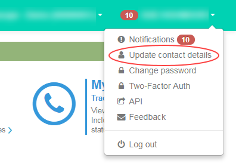
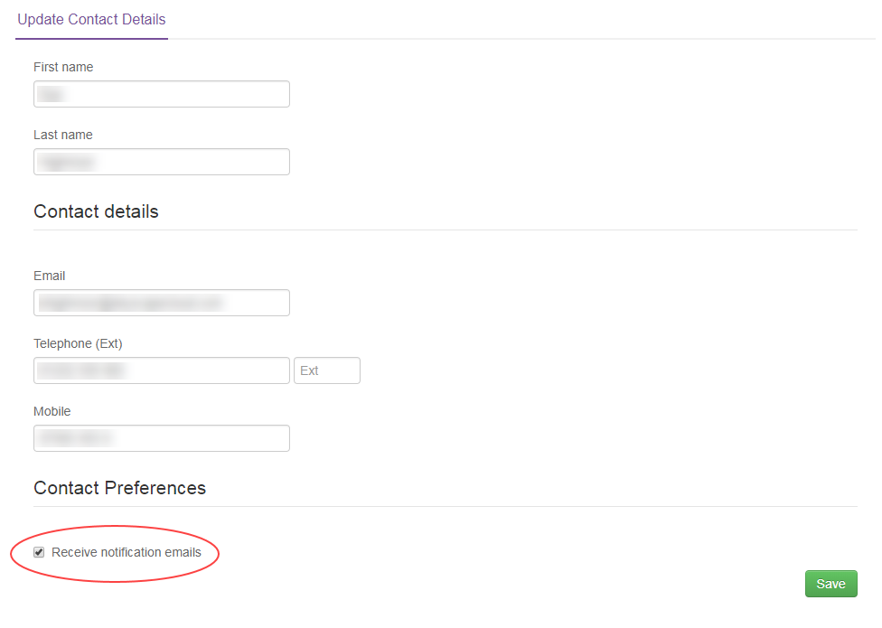

How to sign up for Portal notifications
Overview
When you use the UKCloud Portal, you'll notice that notifications are provided at the top of every page. These notifications provide information about:
Updates to UKCloud services
Planned maintenance
Incidents
If you want, you can also opt to have these notifications sent to you by email. This feature is available in both the Assured and Elevated Portals.
Opting in to Portal notifications by email
Log in to the UKCloud Portal.
For more details see the Getting Started Guide for the UKCloud Portal
In the top-right of the toolbar, click your user name and select Update contact details.

In the Contact Preferences section of the Update Contact Details page, select the Receive notification emails checkbox and then click Save.

You should now receive Portal notification emails to the email address associated with your Portal account.
Note
This may not happen immediately as the update will need to sync with Active Directory. If you experience any issues with receiving emails from the Portal, raise a ticket with UKCloud Support.
Related videos
Feedback
If you find an issue with this article, click Improve this Doc to suggest a change. If you have an idea for how we could improve any of our services, visit UKCloud Ideas. Alternatively, you can contact us at products@ukcloud.com.